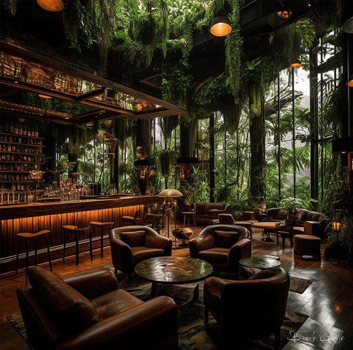

The Canopy Lounge
The Canopy Lounge is one of the special areas in the restaurant that carries a luxurious tropical theme with an urban forest feel. Adorned with greenery dangling from the ceiling and large glass walls that show off the outdoor scenery, this place creates a fresh and soothing atmosphere. With elegant brown leather furnishings, natural-style tables, and warm lighting that exudes intimacy, the area is perfect for relaxing while enjoying a special meal or a drink in the aesthetic bar. Perfect for a relaxed yet classy dining experience.